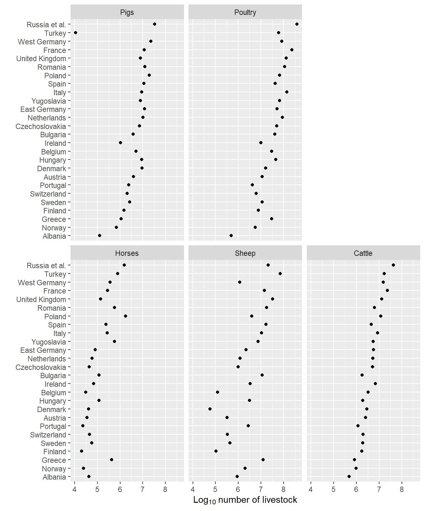
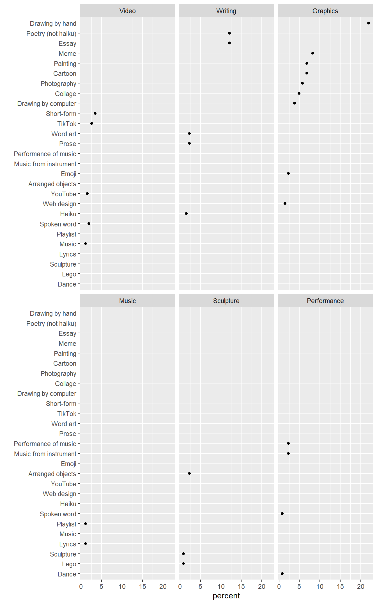
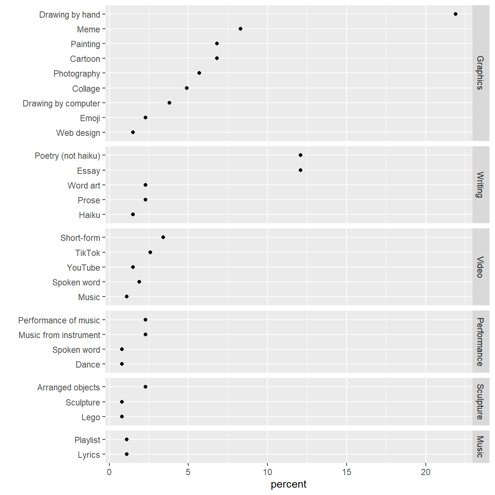

Facets that are not small multiples
Using the scales and space arguments of facet_grid() to manage panel heights of faceted charts when categories are not independent.
Summary. For data structures having two categorical variables and one quantitative variable, this post illustrates how category independence or dependence influences chart design. Graphs with independent categories (multiway data) are easily created in ggplot2 with the
facet_wrap()function; data with dependent categories requirefacet_grid()with itsscalesandspacearguments to treat unequal vertical scales.
Small multiple design is a good design choice for many data structures. To facilitate visual comparisons, every small-multiple frame (variously called panels, facets, or subplots) has identical scales.
Small multiples resemble the frames of a movie: a series of graphics, showing the same combination of variables, indexed by changes in another variable. [@Tufte:1983, 170]
Multiway data—a data structure comprising two independent categorical variables and one quantitative response variable—is well-matched to small multiple design.
What distinguishes multiway data is the cross-classification of the categorical variables; there is a value of the response for each combination of levels of the two categorical variables [@Cleveland:1993, 303].
However, if the categories happen to be dependent, the data are not multiway and the small multiple design fails. Having come across data of this type in a recent article, I thought it would be interesting to illustrate, given one quantitative variable and two categorical variables, how category independence or dependence influences chart design.
I start with a multiway data set and point out that, as a small-multiple design, the panels share common scales. In ggplot2, small multiples are usually created using facet_wrap().
The second example has data with dependent categories. The panels share a common, horizontal, quantitative scale but have different category scales, yielding facets that are not small multiples. I use facet_grid() with its scales and space arguments to treat the unequal vertical scales.
The R code for the post is listed under the “R code” pointers.
Multiway example
The literal textbook example of multiway data and chart design is the livestock chart by Cleveland [-@Cleveland:1993, 303]. The data set contains counts of 5 types of farm animals in 26 countries in 1967. The independent categories are country and animal type; the quantitative variable is the count.
I obtained a reproduction of the data from [@UCLA:2021] and saved it as a CSV file in the blog data directory.
livestock_type country count
<char> <char> <num>
1: Cattle Albania 478000
2: Cattle Austria 2536000
3: Cattle Belgium 3246000
4: Cattle Bulgaria 1796000
5: Cattle Czechoslovakia 5131000
---
126: Sheep Switzerland 336000
127: Sheep Turkey 70093000
128: Sheep United Kingdom 32888000
129: Sheep Russia et al. 21000000
130: Sheep Yugoslavia 7384000The countries are assigned to the rows such that the median count by country increases from bottom to top. The livestock are assigned to the panels such that median count by livestock type increases in graphical order: increasing from left to right and from bottom to top. The logarithm of counts is used for the quantitative scale counts vary by more than four powers of 10.

Typical of small multiple charts in general, all five panels have identical horizontal scales (the count) and identical vertical axes (countries). It follows that the size and aspect ratio of each panel are also identical.
When categories are dependent
The data set that inspired this post is from an article on a creative expression assignment used in a first-year engineering course [@Chambers+Reid:2021]. In response to COVID-19, the course had transitioned from a highly interactive, in-person experience to an asynchronous, online model.
The instructors designed an assignment to encourage students to creatively express how the course interruption and transition online was affecting them. The assignment encouraged complete freedom of expression and choice of media.
A data table in the article reports how the student work is coded: 28 creative genres (prose, lyrics, music performance, dance, YouTube, etc.) grouped into 6 media categories (writing, performance, video, graphics, etc.). The quantitative variable is the count of encodings by genre.
Some submissions covered multiple media and genres, for example, an original song in a video would be coded as both. Thus the total of the count column (304 encodings) exceeds the number of submissions (N = 265). The percent column is a derived variable that reports the count as a percentage of N. The sum of the percent column is therefore greater than 100%.
The data are available in the blog data directory.
medium genre count percent
<char> <char> <int> <num>
1: Writing Prose 6 2.3
2: Writing Essay 32 12.1
3: Writing Word art 6 2.3
4: Writing Poetry (not haiku) 32 12.1
5: Writing Haiku 4 1.5
6: Music Lyrics 3 1.1
7: Music Playlist 3 1.1
8: Performance Music from instrument 6 2.3
9: Performance Performance of music 6 2.3
10: Performance Dance 2 0.8
11: Performance Spoken word 2 0.8
12: Sculpture Arranged objects 6 2.3
13: Sculpture Sculpture 2 0.8
14: Sculpture Lego 2 0.8
15: Video TikTok 7 2.6
16: Video YouTube 4 1.5
17: Video Short-form 9 3.4
18: Video Music 3 1.1
19: Video Spoken word 5 1.9
20: Graphics Collage 13 4.9
21: Graphics Painting 18 6.8
22: Graphics Drawing by hand 58 21.9
23: Graphics Drawing by computer 10 3.8
24: Graphics Photography 15 5.7
25: Graphics Cartoon 18 6.8
26: Graphics Emoji 6 2.3
27: Graphics Meme 22 8.3
28: Graphics Web design 4 1.5
medium genre count percentThe graph I have in mind would have media type assigned to rows and media category assigned to panels. Unlike the livestock example, however, the categorical variables in these data are not independent. For example, web design is associated only with graphics, essay is associated only with writing, etc.
In my first attempt, I use facet_wrap() like I did with the livestock data. The visual problem is obvious…every row has a data marker in one panel only. Because the categories are not independent, the small-multiple design fails.

The scales = "free_y" argument of facet_wrap() replaces the common y-scale with only those row labels associated with a panel. I also use the ncol argument to stack the panels in one column with all rows labels aligned on the left. This graph has the essential layout I had in mind—a common quantitative scale but different vertical scales, yielding facets that are not small multiples.

Because facet_wrap() creates panels of equal height, the rows in this case are unequally spaced.
I switch to facet_grid() to space the rows equally in panels of unequal height. The space = "free_y" argument is added to make the panel height proportional to the length of the y scale.

Editing the chart
While the overall layout above is what I want, I would prefer to move the panel labels from the right-hand side to the top of each panel. I could not find a way to do that, so I removed the right-hand label and wrote the media label inside the panel. I edited some other aesthetics as well.

Features of the graph
facet_grid()as shown earlier for panels of unequal height with rows equally spaced.geom_text()for panel labels, vertically centered.sec_axis()for a secondary scale along the top of the chart showing counts of genre encodings from the data table.theme_light()for gray lines on white background to focus attention on the data.- All text is oriented horizontally for ease of reading.
- Media are ordered by increasing counts (total count rather than median) from bottom to top.
- Within a panel, genres are similarly ordered.
Final thoughts
Regarding their data table, the authors write,
… some media were selected by large numbers of students, such as drawings by hand or computer, and writing such as poems and essays.
The graph supports this assertion but emphasizes visually a couple of other points as well. Drawings by hand, essays, and non-haiku poetry were by far the most popular genres (adding up to nearly 50% of the submission encodings) and graphics was by far the most popular medium (about 60% of the encodings).
Mainly this chart gave me a chance to clarify something that my students would sometimes overlook—that a data structure with two categories and one quantitative variable are multiway data if and only if the categories are independent and a value of the response exists for each combination of levels of the two categories. Otherwise, we cannot expect to use a small-multiple design.